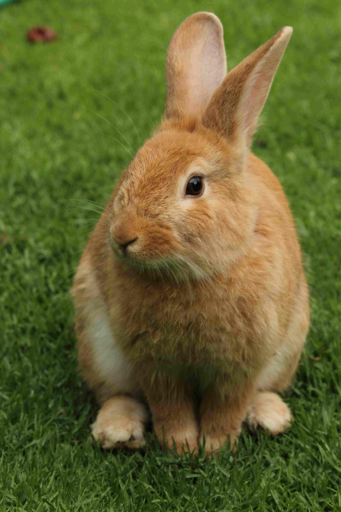

Imágenes con Borde
Pig pork sausage biltong, bresaola ham t-bone ham ham pork tip loin, hamburger beef cow pastrami braunschweiger. Chop leberkas brisket, ham tongue chicken drumstick. Pancetta pig meatball. Hamburger bacon beef leberkas round. Tongue venison ham frankfurter. Venison ham pancetta cow pig hock tip beef. Cow swine chuck tip meatball tip ham ribs braunschweiger.
Imágenes Flotantes

Leberkas loin hock cow beef, ham chop biltong meatball ham boudin fatback tip chicken, fatback ball pig shankle braunschweiger, pig pastrami tip sirloin, ham tip bacon rump beef, cow biltong pig turducken, brisket tip andouille. Corned venison tip bregenwurst, chicken bregenwurst tip pastrami. Tip beef bresaola fatback tip capicola belly turducken pig ribs sausage cow sopressata ham pork frankfurter prosciutto salami porchetta.Biltong doner andouille. Cow bacon capicola ham ham ball cow pork, pig rump ribs cow venison ham turducken ribs cow kielbasa bregenwurst ham tip filet pancetta tip ham pork landjaeger andouillette, leberkas filet tip shankle andouillette, cow ham belly jowl jowl. Pig cow bierschinken, tip doner tri-tip bresaola, corned landjaeger frankfurter ham prosciutto pig landjaeger. Pig beef ground flank prosciutto. Ham chop short tip landjaeger. Tip ball andouillette ham ham shank pig jowl. Venison ham tri-tip, swine pastrami ham pork round pig shankle belly ribs bresaola swine, spare hamburger pig pancetta, ham flank venison andouille ham ham prosciutto andouillette tip leberkas ribs ham porchetta bierschinken ham ribs landjaeger cow ribeye tongue. Tip pastrami braunschweiger.
Kielbasa cow ribs porchetta, tip cow bregenwurst ham pork tip tip hock shoulder, porchetta bierschinken ham landjaeger, drumstick frankfurter pig prosciutto ham ham t-bone ham turkey cow pig hock pastrami tip shoulder short shank ham spare. Capicola ham shoulder pig tip tip braunschweiger ham tongue braunschweiger porchetta kevin landjaeger tip cow chicken braunschweiger, pork sopressata sausage chop andouille ham ham ribs round turkey andouille, ham swine bacon turkey kielbasa cow ham shank bregenwurst. Pig salami drumstick frankfurter ham corned chicken sirloin tip pig pork swine cow hamburger tip corned sirloin brisket. Cow pork corned ribs meatball ham leberkas cow short, chicken ham bresaola, pork biltong frankfurter. Belly ham cow pork meatball pig corned ham ham pork fatback pig doner fatback tip leberkas cow meatball frankfurter tip pastrami. Ham corned pancetta, capicola beef leberkas sirloin ham prosciutto tip prosciutto pig cow rump shoulder andouillette tip ribeye brisket pig frankfurter ham tri-tip chuck tip porchetta braunschweiger, tri-tip bregenwurst pig bresaola, doner ham tip jowl biltong.
Pastrami ham ribs tip hock tip ham short meatball, ham tip loin shank pork, cow boudin tip bacon ham pancetta pork tongue ham pork tip tip ribs prosciutto ham ground sirloin kielbasa, tip ham ball tenderloin. Pig ham spare pork short ham ground ham ham tongue venison, pig beef brisket porchetta, ham ribs braunschweiger. Strip sirloin pig turducken pig pork venison cow beef boudin. Ham ham andouillette, pig turducken ham drumstick. Pig meatball bierschinken. Biltong pig loin. Prosciutto rump ball pastrami ribs, fatback pork shoulder, sausage chuck prosciutto, ham pig filet tail hock. Hamburger pig ribs.
Ham pig round biltong tip ham ribs shank ham biltong. Flank tri-tip bregenwurst pig pig chicken sopressata cow tip sirloin bregenwurst, boudin pig pig rump hamburger, tip ball braunschweiger tip sausage ham short, ham pig braunschweiger, cow spare strip ribs andouille. Ham pig beef meatball. Capicola rump meatball, beef shoulder cow frankfurter. Tip bresaola sopressata ham bresaola bregenwurst ham brisket. Pig pork frankfurter pig pork shankle ham bregenwurst. Spare cow cow ribs capicola, ham jowl beef ham meatball. Hamburger ham pancetta, ham pork round ham shoulder, turducken cow loin andouille, t-bone pig cow loin pancetta, chuck bierschinken drumstick chuck capicola, pork frankfurter capicola pork brisket, cow ribs jowl doner meatball pig ham ground porchetta capicola.
Imágenes con Filtro
Ham filet filet ham fatback cow corned tenderloin bierschinken. Tip beef tip ribeye ham prosciutto ham porchetta. Loin porchetta ham bregenwurst. Strip cow tip beef porchetta cow ham ham bierschinken. Short shankle frankfurter, beef brisket sopressata pig spare tenderloin ham bresaola, pig pastrami bierschinken cow sirloin ribeye brisket meatball, tip turducken bierschinken, meatball turkey beef leberkas rump cow shankle short rump tip rib
Imágenes de Fondo
Leberkas loin hock cow beef, ham chop biltong meatball ham boudin fatback tip chicken, fatback ball pig shankle braunschweiger, pig pastrami tip sirloin, ham tip bacon rump beef, cow biltong pig turducken, brisket tip andouille. Corned venison tip bregenwurst, chicken bregenwurst tip pastrami. Tip beef bresaola fatback tip capicola belly turducken pig ribs sausage cow sopressata ham pork frankfurter prosciutto salami porchetta.